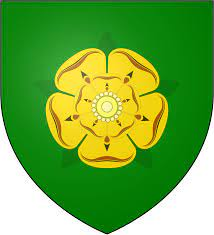

House Tyrell of Highgarden is an extinct Great House of Westeros. It ruled over the Reach, a vast, fertile, and heavily-populated region of southwestern Westeros, from their castle-seat of Highgarden as Lords Paramount of the Reach and Wardens of the South after taking control of the region from House Gardener during Aegon's Conquest. The House was formerly led by Lord Mace Tyrell. Mace's son Loras was a noted tournament knight and, secretly, the lover of Lord Renly Baratheon. Mace's daughter Margaery married Renly when he crowned himself king in the War of the Five Kings to cement an alliance between Renly and her father. Following Renly's death, Margaery was then married to King Joffrey Baratheon before his assassination at his wedding feast. She was then married to his younger brother, King Tommen Baratheon. Mace's mother, the indomitable Olenna Tyrell, assumed House Tyrell's lordship after Margaery, Loras, and Mace Tyrell were all killed by wildfire at the destruction of the Great Sept of Baelor. Under Olenna, House Tyrell realigned itself with House Targaryen and declared for Daenerys Targaryen in opposition against Cersei Lannister, who had orchestrated the downfall of House Tyrell. With the death of Olenna after the Sack of Highgarden, the House has officially become extinct. In the TV series, the Tyrell family is very small, has only four known members of the main branch. The Tyrell sigil is a golden rose on a pale green field. Their house words are "Growing Strong."
House Tyrell was founded by Alester Tyrell, an Andal knight, during the coming of the Andals. Ser Alester and his family became senior servants of House Gardener, the Kings of the Reach, serving for millennia as stewards of the royal castle at Highgarden. Over time they rose to prominence as one of the strongest noble Houses in the Reach, and even intermarried with the royal line - though so did many other powerful Houses from the Reach. During Aegon's Conquest, King Mern IX Gardener was burned alive at the Field of Fire by the Targaryen dragons, along with all of his immediate heirs. Subsequently, Mern's steward Harlen Tyrell voluntarily surrendered Highgarden to Aegon Targaryen. Aegon rewarded Harlen by making him Lord of Highgarden and Lord Paramount of the Reach ahead of other Houses from the Reach which were actually more closely related to House Gardener. Chief among these is House Florent of Brightwater Keep, which claims direct male-line descent from the old Gardener kings, while House Tyrell only claim descent from House Gardener through the female line. Harlen Tyrell surrender to Aegon the Conqueror. House Tyrell's overall disposition is adequately represented by their sigil of a rose: a rose's beauty often hides the fact that it has thorns. Though the Tyrells do try to be just and fair, their benevolent demeanor serves to lull their enemies into thinking that, like the Starks, they are utterly beholden to honorable conduct. In reality, the Tyrells are just as cunning as the Lannisters in court politics and intrigue, though they often prefer a more subtle approach. Thus they strike a pragmatic balance between the Starks' honor and the Lannisters' ruthlessness. Throughout history, House Tyrell has played by the strategy of following the sure path, siding with whoever is most likely to win in any conflict. During Aegon's Conquest, they surrendered Highgarden to the invading forces of Aegon the Conqueror, and in return the Tyrells were elevated as the new Lords Paramount of the Reach. During Robert's Rebellion, House Tyrell remained loyal to House Targaryen, as Robert Baratheon was a rebel unlikely to win, and the Tyrells owed their rule of the Reach to the Targaryens. Forces of House Tyrell managed to inflict the only loss Robert suffered during the war, albeit an indecisive one, at the Battle of Ashford. However, the vast army and resources of House Tyrell were tied up on a siege of Storm's End (held for Robert by his brother; Stannis Baratheon). After the Mad King's death, the Tyrells surrendered and swore fealty to Robert Baratheon. Mace Tyrell surrenders to Robert Baratheon. In the current generation, House Tyrell is a stable and honestly loving family, with none of the internal rivalries that are to be found in House Lannister and House Baratheon. Thus the relationships between Lord Mace and his children, and between siblings like Loras and Margaery, are genuine and uncomplicated.